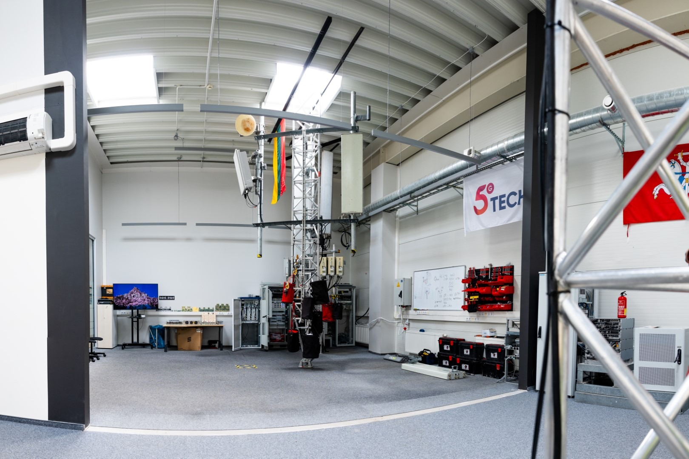

Generaliniams rangovams ir operatoriams
Kai projektas sudėtingas, atsakomybė turi likti aiški.
5G TECH sujungia techninį vertinimą, montavimą, bandymus ir dokumentaciją į vieną valdomą darbų eigą – Lietuvoje ir kitose Europos šalyse.
Nuo pirmo pokalbio
Į projektą įsitraukiame dar prieš prasidedant darbams objekte.
Užsakovui reikia ne dar vieno rangovo sąraše, o komandos, kuri supranta bendrą rezultatą ir laiku pasako, ko dar trūksta jam pasiekti.
Pirmiausia peržiūrime techninę užduotį, objekto sąlygas, terminus ir atsakomybių ribas. Jei informacijos trūksta, įvardijame tai prieš planuojant komandą ir medžiagas.
Vykdymo metu užsakovas turi tiesioginį ryšį su atsakingu žmogumi. Apie darbų eigą, neatitikimus ir sprendimus informuojame tada, kai dar galima veikti, o ne projekto pabaigoje.
Užbaigtus darbus patikriname, užfiksuojame rezultatus ir parengiame sutarto formato dokumentaciją. Taip projektas perduodamas ne žodžiu, o patikrinamu rezultatu.

Ką gauna užsakovas
Mažiau neaiškumo kiekviename projekto etape.
Aiški atsakomybė svarbi ne kaip principas dokumente, o kaip kasdienė projekto darbo tvarka.
01
Mažiau koordinavimo tarp atskirų rangovų
Pagal sutartą apimtį sujungiame techninį vertinimą, darbų planavimą, montavimą, bandymus ir dokumentaciją.
02
Sprendimai priimami anksčiau
Apie trūkstamą informaciją, techninius apribojimus ir neatitikimus kalbame tada, kai dar galima koreguoti planą.
03
Perdavimas be spėlionių
Atliktus darbus patikriname, rezultatus užfiksuojame ir perduodame su sutarta projekto dokumentacija.
Kada galime prisijungti
Nebūtina laukti, kol techninė užduotis bus tobula.
Pradėti galime nuo turimos informacijos ir kartu aiškiai įvardyti, ko dar reikia sprendimui.
01
Projektas dar planuojamas
Peržiūrime techninę užduotį, objekto sąlygas ir pageidaujamą terminą. Išsiaiškiname trūkstamus klausimus, kad būtų galima tiksliau susitarti dėl darbų apimties.
02
Darbai jau vyksta
Galime prisijungti prie konkretaus etapo, perimti sutartą darbų dalį arba sustiprinti esamą komandą ten, kur reikia techninės kompetencijos.
03
Reikia užbaigti likusią apimtį
Įvertiname esamą būklę, sutariame, ką reikia ištaisyti ar patikrinti, ir suplanuojame kelią iki dokumentuoto perdavimo.
Įrodymai prieš pažadus
Patirtis, kurią galima patikrinti.
6000+įgyvendintų bazinių stočių
2G–5Gtechnologijų patirtis
6Europos šalys
2020veikiame nuo
Pirmas pokalbis
Pradžiai pakanka to, ką jau turite.
Jei dalies informacijos dar nėra, tai netrukdo pradėti. Peržiūrėsime turimą medžiagą ir įvardysime kitus reikalingus duomenis.
- Turima techninė užduotis arba preliminari darbų apimtis
- Objekto vieta, esama būklė ir prieigos sąlygos
- Pageidaujamas darbų terminas arba projekto grafikas
- Užsakovo dokumentacijos ir darbų saugos reikalavimai
Tiesioginis kontaktas
Papasakokite, ką planuojate – nuo to ir pradėsime.
Aleksandras Iljinas · generalinis direktorius. Pirmam pokalbiui pakanka turimos projekto medžiagos.